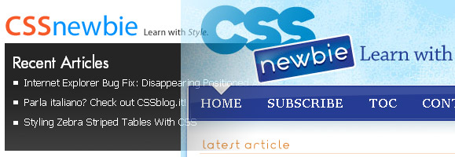

Welcome to the new and improved CSS Newbie! This new version of the site has been a long time in the making, so I’m very excited to finally have it ready for its grand unveiling. And to make things extra auspicious, today is also the eight month anniversary of the site’s official launch on February 1, 2008.
Before I go any further, I’d like to thank Jeremy Harrington of crawlspace|media for designing the page you see before you (or, if you’re reading this in your RSS feed, you should really click through to the site proper). Jeremy was extremely patient with my incessant tweaking, and I think the result is a very beautiful and functional site.
Now, the main focus of CSS Newbie hasn’t changed. I’m still going to strive to produce quality articles on all matter of web development, with a focus on CSS in particular, but also including XHTML, JavaScript, and related frameworks, templates, and technologies. After all, CSS by itself isn’t much use without those other disciplines.
That having been said, there are a few changes to the site that I’d like to take some time to point out. Hopefully, you’ll find them all beneficial (or at least not overly annoying).
A Home Worth Coming Home To
The homepage of the new and improved CSS Newbie has a lot more information than it did previously. Before now, the homepage has always just featured the most recent article in its entirety. However, that sort of a layout assumes you either visit the site often enough to catch every single article I publish, or have some sort of a burning desire to go digging through the archives to see if you’ve missed anything recently.
No more!
The new homepage features a total of five recent articles instead of just one. However, to keep the page compact, I’ve shortened the amount of each article shown. The most recent article will generally get several paragraphs on the front page, with easy access to the rest of the article either by clicking on the title or the “read more” link below the content. The other four articles will feature descriptive excerpts, helping you decide which articles are most worth your time.
Find What You’re Looking For
Of course, there’s always the possibility that you really are one of those people that enjoys digging through website archives to see what you can find. To that end, I’ve built a CSS Newbie Table of Contents. Every article I’ve ever written is available, organized by category. If the article is listed under more than one category, it’ll be listed more than once for increased findability. So go ahead – see what CSS Newbie has to offer!
I’ve also added a search bar to the site’s sidebar – a search bar was a major oversight of mine in the last design. So if you have an idea of what sort of information you’re looking for, but can’t find it by article title in the table of contents, give the search bar a whirl – you might get lucky.
Enhancing the Conversation
I’ve always enjoyed getting comments on the articles I’ve written – the feedback is almost always beneficial in some way. And comments are still around, with the added benefit of gravatars (Globally Recognized Avatars). If you have a gravatar associated with your email address, your photo will now appear next to your comment, making the whole process a lot more personable.
I’ve also added mini-surveys (i.e., polls) to the website. Every once in a while, I’ll post a new survey to the site. It’s a chance for you to offer feedback on a wide variety of questions. The most recent survey will always be featured in the footer of the website, and I’ll try to remember to announce when I’ve released a new survey. Right now, you can offer feedback on what you think of the new design. Be sure to check it out and let me know!
And if I’ve written an article that you’ve really found helpful, please consider submitting it to the social media site of your choice. To make that easier, I’ve added a ShareThis toolbar to the top of every article in the site. Save your favorite articles to Delicious, Ma.gnolia, or dozens of other social networks with the click of a single button.
And speaking of social networks, if you’d like to take the conversation off CSS Newbie entirely, be sure to follow me on twitter. I’ll warn you – I talk about things other than web development. But twitter is a great way to get to better know the person on the other side of the screen. I’d really like to get to know you-all better, so if you feel the same, send a follow my way.
Community News
Many sites these days have a community news section – a portion of the website set aside to allow the users to circulate new and interesting articles within the community. The new CSS Newbie is no different, but our community news section has a twist. I’m conducting what I’m considering an experiment in social media. Instead of coming to my site, filling out a form, and awaiting moderation to get your news published, all you have to do is bookmark the page in one of the popular bookmarking sites (currently Delicious or Ma.gnolia, possibly more to come), give it a short description and a tag of “cssnewbienews” and voila! Your article will appear on CSS Newbie within an hour.
So, if you have an article that either you’ve written or you’ve found and really enjoyed, and you’d like to see it reach a wider audience, be sure to add the “cssnewbienews” tag when you bookmark it. If you use a different bookmarking service, contact me and let me know what it is, and I’ll see if I can get it added to the mix.
New Advertising Options
Redesigning the site allowed me to take some time to reconsider the advertising options available. I’ve made some tweaks that I think will benefit all involved… including reducing the cost of advertising. So if you have a message you want to get noticed, consider sponsoring CSS Newbie.
And Much, Much More
Those are the highlights of the new site design, but there are of course many, many other tweaks and improvements scattered throughout the site. Let me know what you think! Leave a comment on this article, take the survey in the lower-right, send me a shout-out on twitter… I’m waiting to hear from you.
Hey all,
The comment form was a little borked this morning (I made a couple of last-minute tweaks to the form and accidentally deleted a required hidden field!), but it’s up and working now. I’d love to hear your comments.
I like the opened up feeling. Sweet!
Looks great! I’d tighten up the main post line length a little bit but that’s just a reading preference. Looking forward to more articles.
Pingback: Equal Height Columns with jQuery
Pingback: Equal Height Columns with jQuery | Castup
Pingback: Fixing a Bad Feedburner Subscriber Count
Pingback: Equal Height Columns with jQuery | Ahttn.com